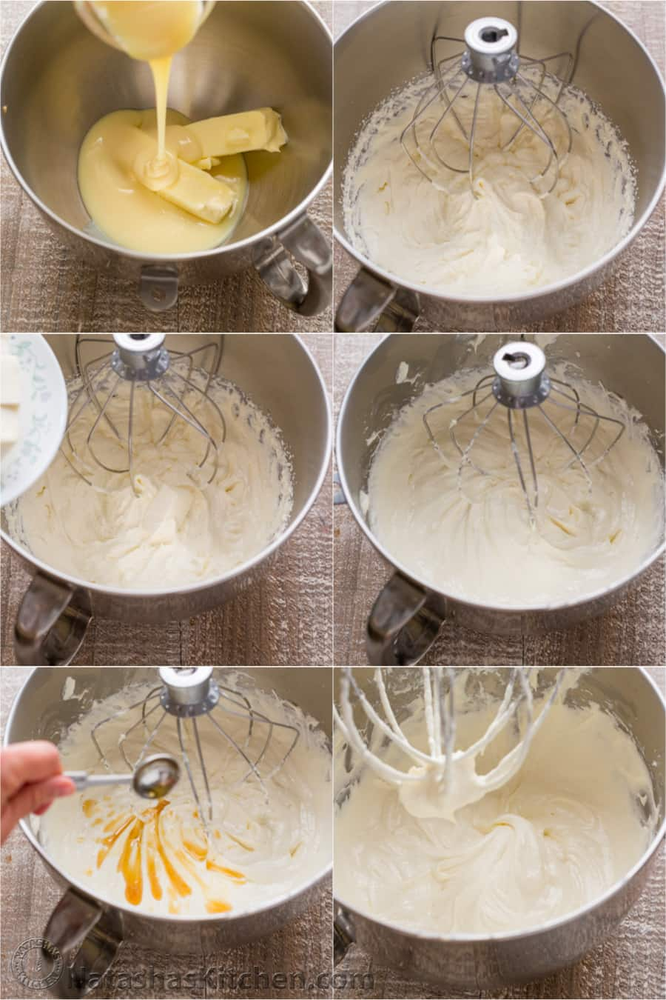

1. In the bowl of a stand mixer fitted with whisk, beat butter and condensed milk on high speed 7 min. It should look whipped and lightened in color.
2. Add 8 oz of softened cream cheese 1 Tbsp at a time while mixing on medium high speed. Continue beating for 3 minutes or until no longer lumpy. Add 2 tsp vanilla and whisk until well incorporated and smooth. Some tiny lumps are ok and will not be noticeable in the cake.
